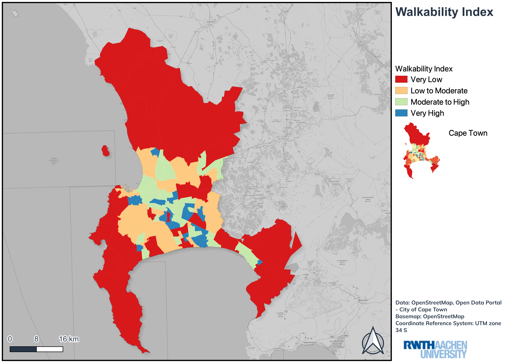

Overview
This project was developed as part of the Mobility Research and Transport Modelling course at RWTH Aachen, focusing on walkability patterns across Cape Town. A walkability index was computed and mapped in QGIS using core built-environment indicators including street connectivity, land use mix and dwelling density.
Methodology
Street Connectivity
Analysed how connected the street network is across Cape Town neighbourhoods, highlighting areas with more direct and walkable movement options.
Land Use Mix
Evaluated the spatial mix of land-use categories to identify areas where everyday destinations are more likely to be reachable on foot.
Dwelling Density
Included dwelling density as a built-environment indicator linked to local activity, compactness and walkable neighbourhood structure.
Tools & Technologies
- QGIS for spatial processing, walkability index calculation and map design
- Course project for Mobility Research and Transport Modelling at RWTH Aachen
- Street connectivity, land use mix and dwelling density indicators
- Cartographic visualisation of walkability patterns across Cape Town
Outcome
The final map communicates differences in pedestrian-friendly urban form across Cape Town and demonstrates how QGIS can support walkability analysis for transport planning and mobility research.